project 3
fun with flow models
This project is in two parts. In Part A, I use a pretrained text-to-image flow model to denoise, sample, guide, edit, and build optical illusions, with no training. In Part B, I build a UNet from scratch in PyTorch and train my own flow matching models on MNIST.
Part A: Exploring the Power of Flow Models
Part A uses the pretrained PixNerd model, a text-conditioned flow model that generates 512x512 images. The convention throughout is linear flow matching: time t = 0 is pure Gaussian noise, time t = 1 is a clean image, and the point on the path between them is xt = (1 − t)ε + t·x1. The model predicts a velocity vθ(xt, t, c) that points from noise toward data, and the ground truth velocity along the straight path is simply x1 − ε.
1.1: Constructing Noisy Training Inputs
For sections 1.1 through 1.5, I used my own photo of some palm trees. I implemented interpolate(image, noise, t) as xt = (1 − t)ε + t·x1, sampled a single noise tensor ε ~ N(0, I) once, and reused it at t = 0.25, 0.50, and 0.75. I also checked both endpoints: t = 0 returns exactly ε and t = 1 returns exactly the image. At t = 0.25 only the trunk and the bright sky survive the noise, while at t = 0.75 the photo is clearly visible under a fine grain.
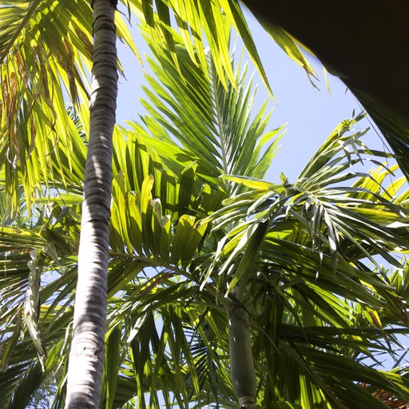
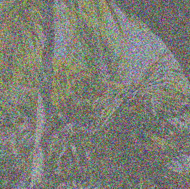
1.2: Classical Denoising
As a baseline, we can denoise each input with a Gaussian blur. I swept over σ values of 1, 2, 4, 8, and 16 and kept the σ with the lowest mean squared error to the known clean image, which picked σ = 4 at t = 0.25, σ = 2 at t = 0.50, and σ = 1 at t = 0.75. Blurring seems to trade noise for detail: at t = 0.25 the best result is a smeared blob of colors, and even at t = 0.75 the image is softened and still speckled.
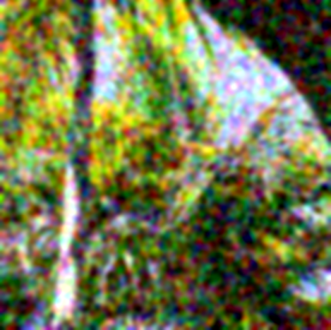
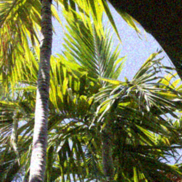
1.3: One-Step Denoising
Now let's use the model. Given a noisy input, the model predicts the velocity, and following that velocity all the way to t = 1 in a single step gives an estimate of the clean image: x̂1 = xt + (1 − t)·vθ(xt, t, c), with the prompt "a high quality photo". I made exactly one prediction for each of the three noisy inputs. The result is dramatically better than blurring. At t = 0.75 the estimate is nearly indistinguishable from the original. At t = 0.50 it is a clean image with slightly softer fronds. At t = 0.25 the model has to invent most of the content, so the resulting palm tree is much more softened.
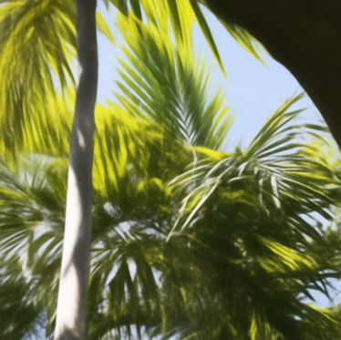
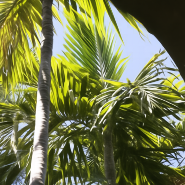
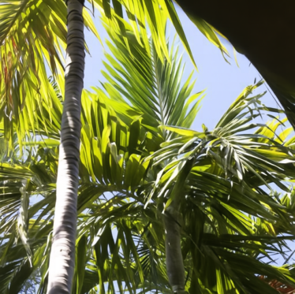
1.4: Visualizing Velocity
What exactly is the model adding in the step above? Here I visualize the predicted update (1 − t)·v̂t next to the ground truth update (1 − t)·vgt = x1 − xt, where vgt = x1 − ε comes from the saved noise. The error heatmap is the RMS of the difference between the two updates.
At t = 0.25 the update has to fill in a lot of the details because it must subtract 75% of the noise and add 75% of the image. The predicted update is visibly smoother than the ground truth, since the model doesn't know the exact injected noise and instead will end up predicting the expected clean image, so the error concentrates on the finer high frequency details. As t increases the remaining update shrinks, and the error reduces.
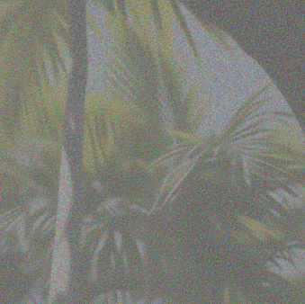
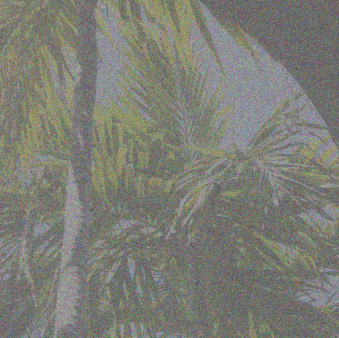
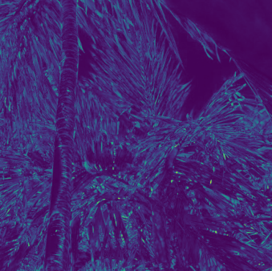
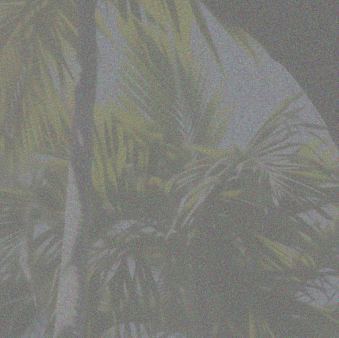
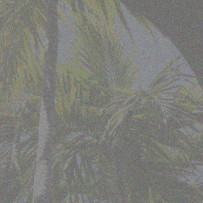
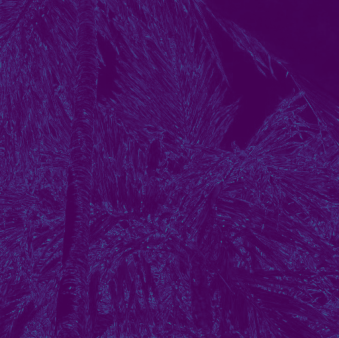
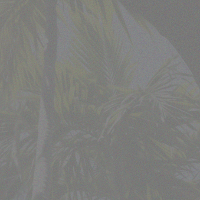
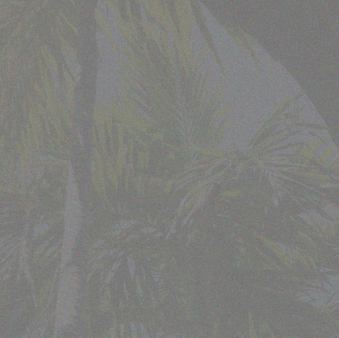
1.5: Iterative Denoising with Euler Sampling
Instead of jumping to t = 1 in one step, we can integrate the velocity field a little at a time. I implemented euler_sample, which repeats xt+h = xt + h·v(xt, t), recomputing the velocity at every step and shortening the final step so that it lands on t = 1 exactly. I denoised the t = 0.50 input using this method with h set to 0.02, which takes 25 updates. Below is the initial state, every fifth update, and the final result.

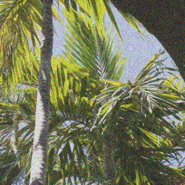
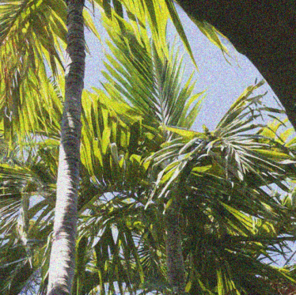

Comparing the three methods on the same t = 0.50 input: the blur is the worst, the one-step estimate is clean but a little soft, and the Euler result is the sharpest. Neither model-based result reproduces the original exactly.
1.6: Generating Images from Noise
What if we started from t = 0 (pure noise) instead? I drew five independent Gaussian images and integrated from 0 to 1 with h = 0.02 (50 updates) and the prompt "a high quality photo". The results are coherent photographic images, but with a very clear subject since all five are portraits of people. Nothing in the prompt asks for people, so this is what the model thinks a "high quality photo" is. The quality is also uneven. Seeds 182 and 184 are convincing, while seeds 180, 181, and 183 have melted anatomies.


2.1: Classifier-Free Guidance
Classifier-free guidance (CFG) strengthens the effect of the prompt. I implemented cfg_velocity as vcfg = vc + w·(vc − vu), where vc is the velocity conditioned on the prompt and vu is the velocity conditioned on the null/empty string. I regenerated the five samples above with w = 7 and h = 0.02 from the same five initial seeds. Guidance pushes each step further in the flow direction of the prompt, so the samples lean much harder into the "a high quality photo" prompt resulting in sharper and more polished images than the unguided ones. Compared with section 1.6, every sample is a clean studio headshot with no weird anatomy.
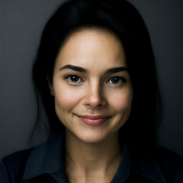
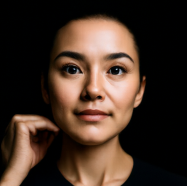
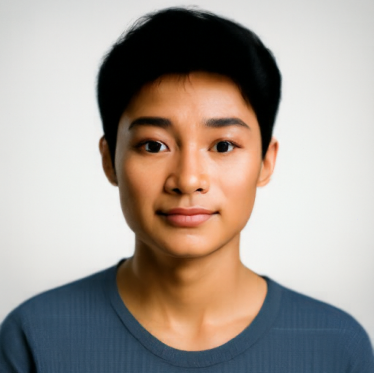
3.1: Image-to-Image Editing
I implemented edit by constructing xstart = (1 − tstart)ε + tstart·x1 and running Euler sampling from tstart to 1 with CFG (w = 7, h = 0.02, prompt "a high quality photo", empty prompt for the unconditional branch). The starting time controls how much the image is allowed to change. A small tstart like 0.02 is almost pure noise, so the model produces a new image that shares at most the rough color layout of the input. A large tstart like 0.50 keeps the structure and only cleans up the details. I ran the seven starting times 0.02, 0.04, 0.06, 0.10, 0.14, 0.25, and 0.50 on the campanile and on two of my own photos, the palm trees from section 1 and a photo of buildings.
For the campanile, at tstart = 0.02 the model only keeps the general color and shape of the original image, producing a blurry rounded cylinder. By 0.04 and 0.06 it is a smooth white tower, but a generic one with no windows or clock. At 0.10 and 0.14 a single window appears near the top and the trees fill in, at 0.25 the arched openings and a faint clock emerge, and at 0.50 it almost looks like the original.
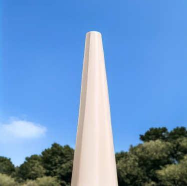
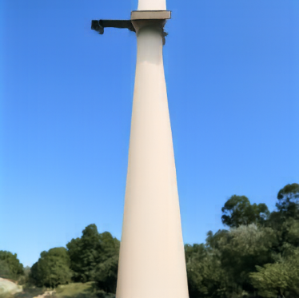
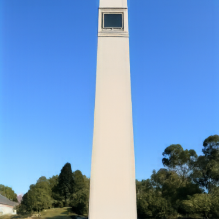
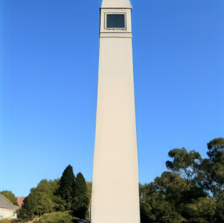
The palm trees are more surprising. At the smallest starting times the model abandons the subject entirely and falls back on the same portrait bias from section 1.6. The green and the diagonal trunk only start to pin the content down around 0.10, where the fronds appear and from t=0.14 onward the result is a palm tree that gets closer to the original with every step.
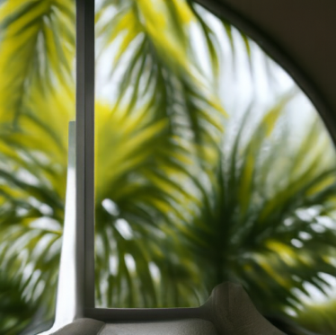
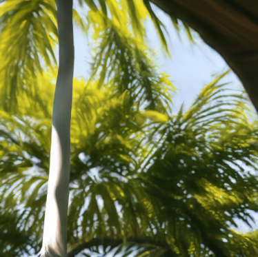
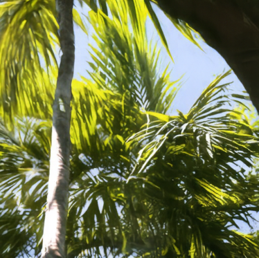
The buildings follow the same pattern but stay "architectural" the whole way, since the gray and blue layout reads as a building at any noise level. At 0.02 and 0.04 the model produces abstract concrete blocks, at 0.06 a low modern building, and at 0.10 a plausible but slightly different skyline with the same overall composition.
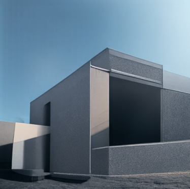
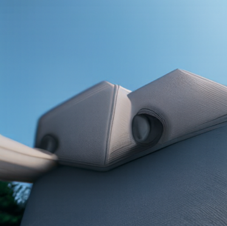
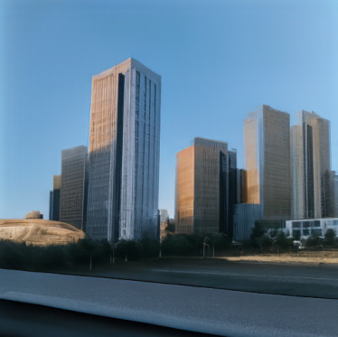
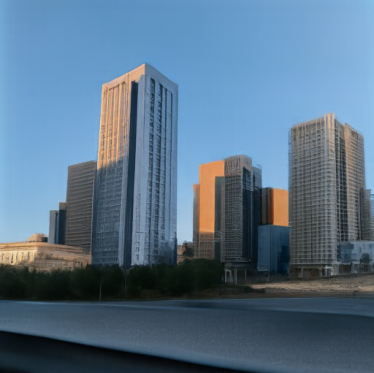
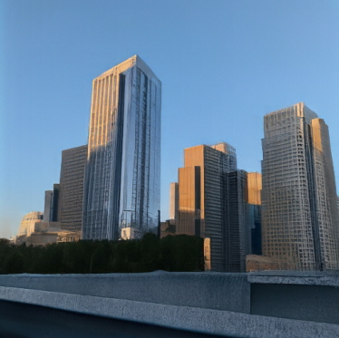
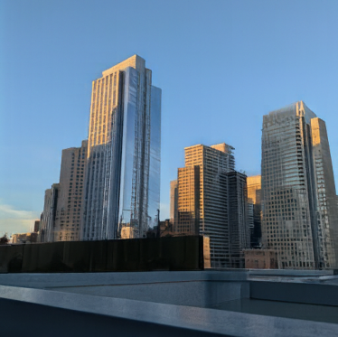
The same procedure works on images that are not photographs at all. I repeated it with the same seven starting times on an image of Bambi from the web and on two of my own drawings, a girl and a tree. For the drawings, the interesting question is how little of the sketch the model needs before it can still find the subject.
The Bambi still is the most entertaining of the set, because the model has a photographic prior and the input is a cartoon. At tstart = 0.02 through 0.10 it ignores the deer entirely and produces people in blue shirts, which is the 1.6 portrait bias showing up yet again, with the blue-green water surviving only as a backdrop. At 0.25 Bambi and Thumper are back in their correct positions but rendered with fur texture, and at 0.50 the flat cartoon shading returns.
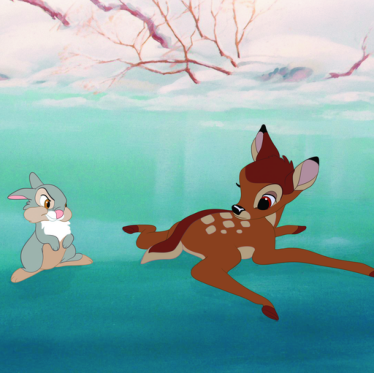
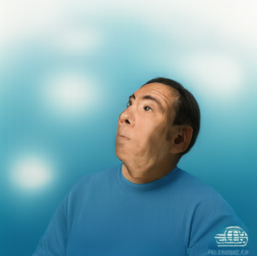
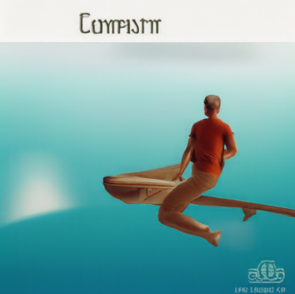
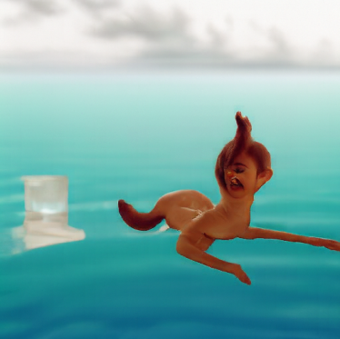
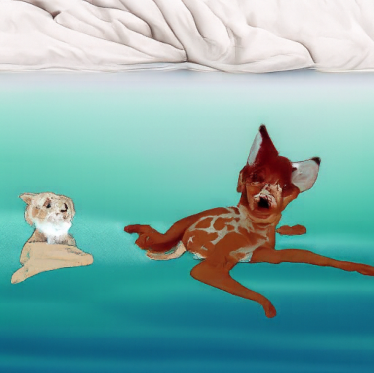
My drawing of a girl is two pencil sketches on a white page, so at small starting times almost all of the signal is just "white paper". At 0.10 and 0.14 the two purple patches where the heads were become two boxy purple objects. The faces only reappear at 0.25, now rendered as a cleaner colored illustration with smooth shading, and 0.50 is almost exactly my sketch.
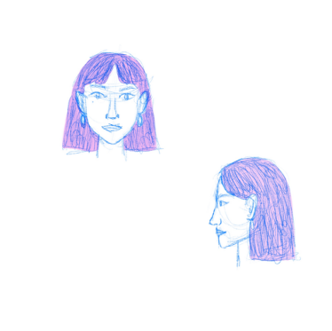
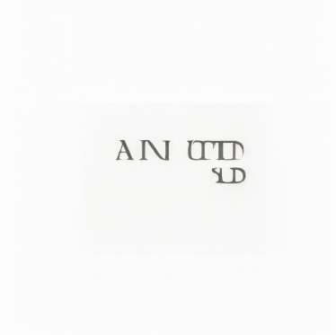
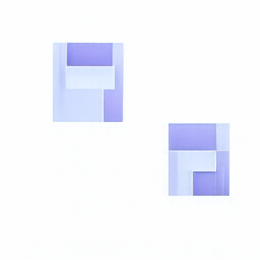
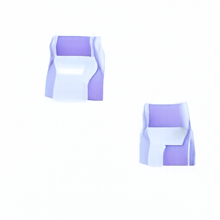
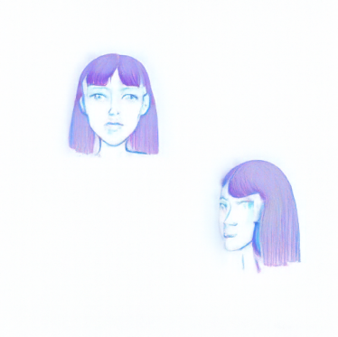
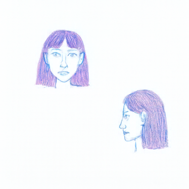
The tree drawing behaves similarly. Its rectangular paper border on a pale blue background is read as an empty white picture frame at 0.02, 0.04, and 0.06. At 0.10 the purple and green become a pixelated grid, and at 0.14 and 0.25 they turn into soft out-of-focus blobs in roughly the right places, like foliage seen through a blurry lens. The trunk and branches only become legible again at 0.50.
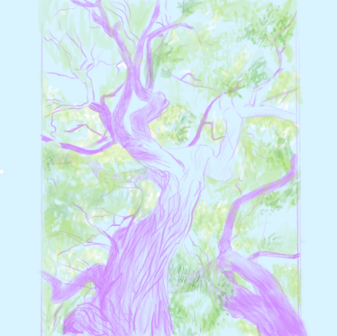
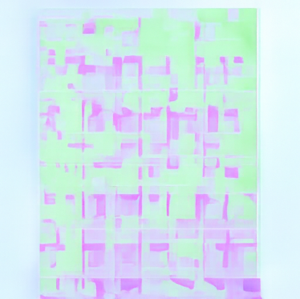
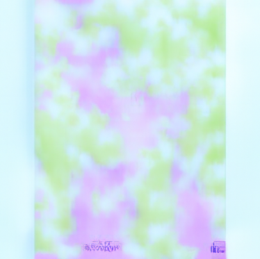
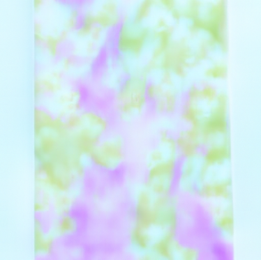
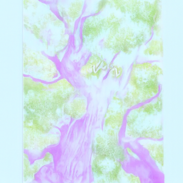
3.2: Text-Guided Image Editing
Swapping the generic prompt for a descriptive one turns the same procedure into text-guided editing. Small starting times give the prompt free rein, so the output is mostly the prompt's subject with the input's layout, while larger starting times are more similar to the input and the prompt can only nudge textures and colors. The prompts I chose were:
Campanile, "a photograph of a rocket on a launch pad".
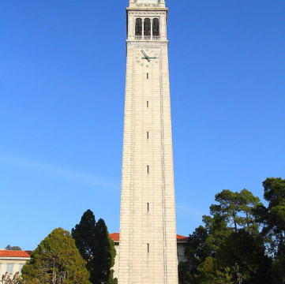
Palm trees, "a photograph of two avant-garde masks".
Buildings, "a photograph of a spool of purple and green yarn".
3.3: Visual Anagrams
A visual anagram is an image that shows one thing upright and another thing upside down. Let F be a 180 degree rotation (flipping both spatial axes, not just a vertical mirror). To create these anagrams, you compute two guided velocities: one for prompt a on the image as-is, vcfg(x, t, ca), and one for prompt b on the rotated image, which you then rotate back, F(vcfg(F(x), t, cb)). The sampler follows the average of the two. Because both velocities are computed from the same x and t, the image is pushed toward satisfying both prompts at once in their respective orientations. It took a few prompt and seed attempts to get both subjects recognizable; the two pairs I kept are an oil painting of a teapot that becomes a blooming California poppy, and a lithograph of a dragon that becomes a forest.
3.4: Hybrid Images
This is the hybrid image idea from project 2, but done inside the sampler instead of on finished photos. At every Euler step I compute guided velocities for two prompts and combine them in the frequency domain: v = lowpass(va) + vb − lowpass(vb). Below, each hybrid is shown at full size (the close-up subject) and shrunk down (the distant subject). As with the anagrams, several attempts were needed with the prompts and seeds.
Part B: Flow Matching from Scratch
In Part B, I build a flow matching model from scratch. Everything here is trained on MNIST dataset using a UNet written from scratch in PyTorch. I start with a plain single-step denoiser, then add time conditioning to turn it into a flow matching model that can generate digits from noise, and finally add class conditioning and classifier-free guidance to ask for a specific digit.
1.1: Implementing the UNet
The denoiser is a small UNet, shown below. A ConvBlock lifts the 1x28x28 input to D channels, two DownBlocks halve the resolution to 14x14 and then 7x7 while doubling to 2D channels, and Flatten averages the 7x7 map down to a single 1x1 vector that Unflatten expands back to 7x7. Two UpBlocks then climb back to 28x28, and at each resolution the matching encoder feature map is concatenated on (the dashed skip connections), so fine spatial detail survives the bottleneck. A final ConvBlock and a 3x3 convolution produce the one-channel output.
1.2: Using the UNet to Train a Denoiser
The first task is a single-step denoiser: given a noisy digit z = x + σε with ε ~ N(0, I), predict the clean digit x, trained with an L2 loss between D(z) and x. Below is a training digit at σ = 0.0, 0.2, 0.4, 0.5, 0.6, 0.8, and 1.0. By σ = 0.8 the digit is hard to make out, and at σ = 1.0 it is mostly gone.
1.2.1: Training the Denoiser
I trained the UNet with D = 128 hidden channels on σ = 0.5 noise, using the shuffled MNIST training set with batch size 256 for 5 epochs and Adam with a learning rate of 1e-4. The loss drops almost immediately and flattens out at a mean squared error of around 0.01; the orange line is a 100-step moving average.
Here are the first ten test digits, their σ = 0.5 noisy versions, and the denoiser's output after the first and the fifth epoch. Each grid shows the clean digits on top, the noisy inputs in the middle, and the outputs on the bottom. The model already recovers every digit after one epoch, and the extra epochs mostly tighten up the strokes.
1.2.2: Out-of-Distribution Testing
The denoiser only ever saw σ = 0.5 during training. To see how it copes with other noise levels, I ran the same ten test digits through it at σ = 0.1, 0.2, 0.3, 0.7, 0.8, and 1.0 (the σ = 0.5 result is above). Below the training level the outputs are clean, if anything slightly over-smoothed, since the model removes more noise than is there. Above it the strokes get blobby and start to break up, and at σ = 1.0 several digits are no longer identifiable.
1.2.3: Denoising Pure Noise
What happens if the input carries no information at all? I trained a fresh D = 128 UNet in the same way, except that the input is pure noise ε ~ N(0, I) drawn independently of the target digit. The loss converges at roughly 0.07, much higher than the previous denoiser.
After both epoch 1 and epoch 5, the network produces the same blurry gray blob for every single input, regardless of what the noise or the target digit looked like. The blob is roughly digit-shaped and looks like a fuzzy mix of a 3, an 8, and a 9. The network learns to ignore its input and emit the average MNIST digit, and the loss it plateaus at is the per-pixel variance of the dataset around that mean.
2.1: Adding Time Conditioning to the UNet
A single-step denoiser cannot generate images from scratch, as the last section showed. Flow matching fixes this by training the network to predict a velocity field that is integrated in many small steps, and for that the network has to know what time it is. I inject the scalar t ∈ [0, 1] with FCBlocks, small fully connected blocks (Linear → GELU → Linear).
2.2: Training the Time-Conditioned UNet
Training follows the flow matching objective. For each clean digit x1 in the batch, I sample noise x0 ~ N(0, I) and a time t ~ U[0, 1] (a different t per image), build xt = (1 − t)x0 + t·x1, and regress the network output uθ(xt, t) onto the true flow x1 − x0 with a mean squared error. I used D = 64 hidden channels, batch size 64, and 10 epochs with Adam at a learning rate of 1e-4 and an exponential learning rate scheduler with γ = 0.9, stepped once per epoch. The loss is noisier than the denoiser's because the target now includes the random noise itself, and it settles around 0.1.
2.3: Sampling from the Time-Conditioned UNet
To generate a digit, I start from pure noise x ~ N(0, I) and take 50 Euler steps, x ← x + (1/T)·uθ(x, t) with T = 50 and t = i/T at step i. Below are samples after 1, 5, and 10 epochs (40 samples at epoch 10). After one epoch the model produces stroke-like squiggles that are not yet digits. After five, most samples are recognizable 1s, 2s, 5s, 6s, and 8s. After ten, the large majority are plausible digits, though some are still malformed hybrids, like a shape halfway between a 3 and an 8. Since the model is unconditional, there is no control over which digit comes out.
2.4: Adding Class Conditioning to the UNet
To control which digit is generated, I also condition on the class label. The label is one-hot encoded into a 10-dimensional vector c and passed through two more FCBlocks. The time and class embeddings are then combined. During training, the class vector is zeroed out with probability puncond = 0.1, so the same network also learns to generate unconditionally. That unconditional mode is what makes classifier-free guidance possible at sampling time.
2.5: Training the Class-Conditioned UNet
Training is the same flow matching recipe as 2.2 with the class label and the random dropout mask added. I used D = 64, batch size 64, 10 epochs, puncond = 0.1, and Adam with an initial learning rate of 1e-2 and an exponential scheduler with γ = 0.11/10 stepped once per epoch, so the learning rate decays to 1e-3 by the end.
2.6: Sampling from the Class-Conditioned UNet
Sampling uses classifier-free guidance. At each of 300 Euler steps, I run the network twice, once with the class vector masked out to get vu and once with it present to get vc, and step along v = vu + γ(vc − vu) with γ = 5. Below are four samples of each digit 0 through 9 after epochs 1, 5, and 10, all from the same seed. After a single epoch the 0s, 1s, 2s, and 3s already look right while 4 through 9 are still half-formed. By epoch 5 every class is clean and legible, and by epoch 10 the digits are crisp with natural variation in slant and stroke width between the four samples of each class.
Finally, I tested whether the learning rate scheduler is actually necessary. I trained an identical model with no scheduler and a constant learning rate of 1e-3 instead, since the scheduled run ends at 1e-3. The loss curve has no initial spike and settles to the same ~0.1 level, but stays slightly noisier late in training because the step size never shrinks.
After one epoch the constant-rate model is actually ahead, its digits are already fully formed, while the scheduled run was still recovering from its 1e-2 start. By epochs 5 and 10 the two are very close. So the scheduler is not strictly required for similar performance here and the simpler implementation is still very effective.